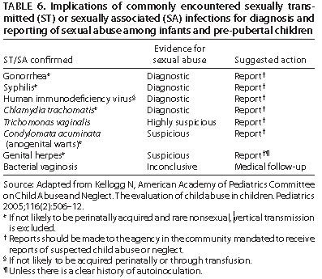

Recommendations in this report are limited to the identification and treatment of STDs. Management of the psychosocial aspects of the sexual assault or abuse of children is beyond the scope of these recommendations.
The identification of sexually transmissible agents in children beyond the neonatal period suggests sexual abuse. The significance of the identification of a sexually transmitted agent in such children as evidence of possible child sexual abuse varies by pathogen. Postnatally acquired gonorrhea; syphilis; and nontransfusion, nonperinatally acquired HIV are usually diagnostic of sexual abuse. Sexual abuse should be suspected when genital herpes is diagnosed. The investigation of sexual abuse among children who have an infection that could have been transmitted sexually should be conducted in compliance with recommendations by clinicians who have experience and training in all elements of the evaluation of child abuse, neglect, and assault. The social significance of an infection that might have been acquired sexually and the recommended action regarding reporting of suspected child sexual abuse varies by the specific organism, as do the recommendations regarding reporting of suspected child sexual abuse (Table 6). In all cases in which an STD has been diagnosed in a child, efforts should be made to detect evidence of sexual abuse, including conducting diagnostic testing for other commonly occurring STDs (484–486).

The general rule that sexually transmissible infections beyond the neonatal period are evidence of sexual abuse has exceptions. For example, rectal or genital infection with C. trachomatis among young children might be the result of perinatally acquired infection and has, in some cases, persisted for as long as 2–3 years. Genital warts have been diagnosed in children who have been sexually abused, but also in children who have no other evidence of sexual abuse (487,488). BV has been diagnosed in children who have been abused, but its presence alone does not prove sexual abuse. In addition, most HBV infections in children result from household exposure to persons who have chronic HBV infection.
The possibility of sexual abuse should be strongly considered if no conclusive explanation for nonsexual transmission of an STD can be identified.